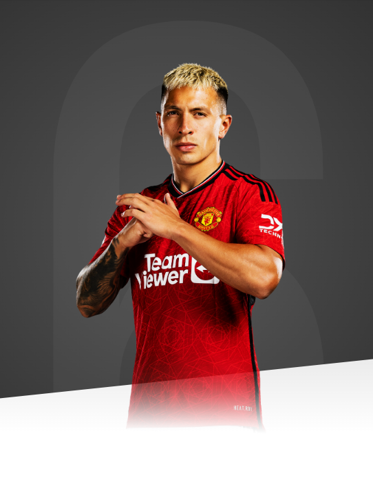

I've worked so hard to get to this moment and, now that I'm here, I'm going to push myself even further.

AGE
25
APPEARANCES
51
CLEAN SHEETS
1
BIOGRAPHY
A strong defender with an eye for a pass, Martinez has plenty of experience on the big stage.
Lisandro Martinez's formative footballing years were spent at Argentinian sides Club Urquiza and Club Libertad, where he was spotted by Argentina Primera Division side Newell's Old Boys. Martinez moved to Newell's Old Boys in 2014 and was handed his senior debut for the side in June 2017 against Godoy Cruz, proving to be his only appearance for the club.
In August 2017, the defender moved to fellow Primera Division side Defensa y Justicia on loan and played his first match for his new club on 13 October 2017 against San Lorenzo.
Following his first senior goal away to Club Atletico Temperley just two fixtures later, Martinez enjoyed a successful spell at the Defensa y Justicia. At the end of that season, the club bought 50% of the rights to the Argentine.
Following another successful season at Defensa, Martinez earned his first senior call-up to the Argentina squad in March 2019. The stalwart has represented his nation at both Under-20s and Under-23s level and made his senior international debut against Venezuela on 22 March 2019.
Martinez remained in his native Argentina for only one more year, moving to Ajax in the summer of 2019. Martinez won the Johan Cruyff Shield against PSV on his competitive debut and continued his impressive start to life in the Netherlands, scoring his first goal and being awarded Man of the Match in the second game of the Eredivisie season against FC Emmen.
Ajax were top of the Eredivisie table when the season was halted in Martinez's debut season due to the Covid-19 pandemic. No trophy was awarded as the season ended prematurely.
However, the following season (2020/21), Martinez played a pivotal role in Ajax's league and cup double as the Dutch giants won both the Eredivisie and the KNVB Cup
The defender added to his domestic success with international glory, that summer, as he was part of the Argentina squad that won the 2021 Copa America - the nation's first since 1993.
The Argentine followed this up with a sparkling 2021/22 campaign which culminated in him being awarded with Ajax's Player of the Year Award as they won the Eredivisie for the second successive time.
Martinez added to his international accolades in the summer of 2022, as he was part of the Argentina squad won the Finalissima against Italy, before finalising his switch to Old Trafford on 27 July.
Despite the media questioning his physicality, Lisandro quickly became a fans' favourite with his passion, grit and tough tackling. His performance in United's 2-1 home win over Liverpool endeared the Argentinian to Reds supporters and he was named Player of the Month for August. Martinez went away with his country during the winter for the 2022 World Cup in Qatar and returned as a world champion, after the dramatic penalty shootout victory over France in the final.
After contributing greatly to our Carabao Cup success in February 2023, Licha's season was unfortunately cut short in April when he suffered a metatarsal injury against Sevilla in the Europa League quarter-final first leg, at Old Trafford. He was ruled out for the remainder of the campaign, missing the FA Cup final in June, but looks set to be back for United's 2023/24 pre-season preparations.